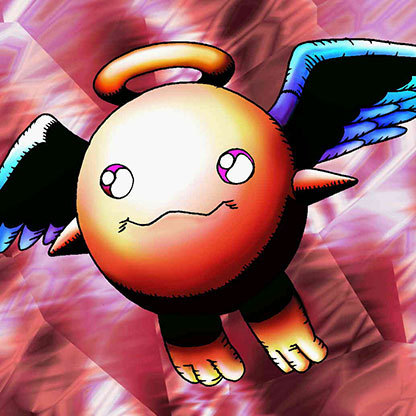

Petit Angel

Description: "Revives in own Summoning Area, other than current location, when destroyed in battle."
STATS
ATK: 600
DEF: 900DECK COST
Deck Cost per Card: 20EFFECT NOT IMPLEMENTED
Fusion List (15 Possible Fusions)
- Petit Angel + Dancing Elf = Mystical Elf
- Petit Angel + Dig Beak = Garvas
- Petit Angel + Fairy's Gift = Dark Witch
- Petit Angel + Gate Deeg = Garvas
- Petit Angel + Ice Water = Dark Witch
- Petit Angel + Key Mace = Dark Witch
- Petit Angel + Lady of Faith = Dark Witch
- Petit Angel + Little Chimera = Garvas
- Petit Angel + Milus Radiant = Garvas
- Petit Angel + Mystical Elf = Dark Witch
- Petit Angel + Mystical Sheep #1 = Garvas
- Petit Angel + Mystical Sheep #2 = Garvas
- Petit Angel + Obese Marmot of Nefariousness = Garvas
- Petit Angel + Queen's Double = Dark Witch
- Petit Angel + Silver Fang = Garvas